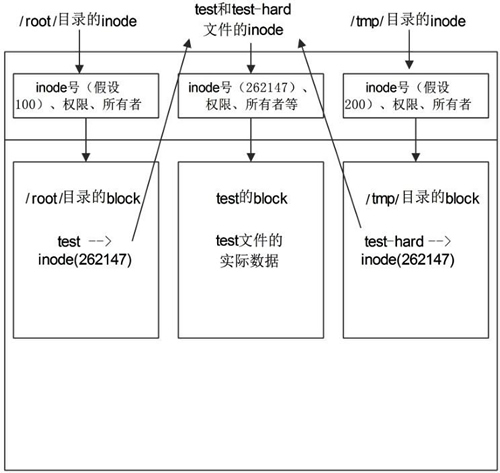

Linux ln命令：在文件之间建立链接（硬链接和软链接）详解版

图 1 ext4 文件系统示意图
ext4 文件系统会把分区主要分为两大部分（暂时不提超级块）：小部分用于保存文件的 inode (i 节点）信息；剩余的大部分用于保存 block 信息。
inode 的默认大小为 128 Byte，用来记录文件的权限（r、w、x）、文件的所有者和属组、文件的大小、文件的状态改变时间（ctime）、文件的最近一次读取时间（atime）、文件的最近一次修改时间（mtime）、文件的数据真正保存的 block 编号。每个文件需要占用一个 inode。大家如果仔细查看，就会发现 inode 中是不记录文件名的，那是因为文件名记录在文件所在目录的 block 中。
block 的大小可以是 1KB、2KB、4KB，默认为 4KB。block 用于实际的数据存储，如果一个 block 放不下数据，则可以占用多个 block。例如，有一个 10KB 的文件需要存储，则会占用 3 个 block，虽然最后一个 block 不能占满，但也不能再放入其他文件的数据。这 3 个 block 有可能是连续的，也有可能是分散的。
由此，我们可以知道以下 2 个重要的信息：
- 每个文件都独自占用一个 inode，文件内容由 inode 的记录来指向；
- 如果想要读取文件内容，就必须借助目录中记录的文件名找到该文件的 inode，才能成功找到文件内容所在的 block 块；
了解了 Linux 系统底层文件的存储状态后，接下来学习 ln 命令。
ln 命令用于给文件创建链接，根据 Linux 系统存储文件的特点，链接的方式分为以下 2 种：
- 软链接：类似于 Windows 系统中给文件创建快捷方式，即产生一个特殊的文件，该文件用来指向另一个文件，此链接方式同样适用于目录。
- 硬链接：我们知道，文件的基本信息都存储在 inode 中，而硬链接指的就是给一个文件的 inode 分配多个文件名，通过任何一个文件名，都可以找到此文件的 inode，从而读取该文件的数据信息。
ln 命令的基本格式如下：
[root@localhost ~]# ln [选项] 源文件 目标文件
选项：- -s：建立软链接文件。如果不加 "-s" 选项，则建立硬链接文件；
- -f：强制。如果目标文件已经存在，则删除目标文件后再建立链接文件；
【例 1】创建硬链接：
[root@localhost ~]# touch cangls
[root@localhost ~]# ln /root/cangls /tmp
#建立硬链接文件，目标文件没有写文件名，会和原名一致
#也就是/tmp/cangls 是硬链接文件
【例 2】创建软链接：
[root@localhost ~]# touch bols
[root@localhost ~]# In -s /root/bols /tmp
#建立软链接文件
ln创建链接的深度剖析
建立硬链接和软链接非常简单，那这两种链接有什么区别？它们都有什么作用？这才是链接文件最不容易理解的地方，我们分别来讲讲。ln创建硬链接
我们再来建立一个硬链接文件，然后看看这两个文件的特点。
[root@localhost ~]# touch test
#建立源文件
[root@localhost ~]# ln /root/test /tmp/test-hard
#给源文件建立硬链接文件 /tmp/test-hard
[root@localhost ~]# ll -i /root/test /tmp/test-hard
262147 -rw-r--r-- 2 root root 0 6月 19 10:06 /root/test
hard
262147 -rw-r--r-- 2 root root 0 6月 19 10:06 /tmp/test-hard
#查看两个文件的详细信息，可以发现这两个文件的 inode 号是一样的，"ll"等同于"ls -l"。
但是这里源文件和硬链接文件的 inode 号居然是一样的，那我们在查找文件的时候，到底找到的是哪一个文件呢？我们来画一张示意图，如图 2 所示。

图 2 硬链接示意图
在 inode 信息中，是不会记录文件名称的，而是把文件名记录在上级目录的 block 中。也就是说，目录的 block 中记录的是这个目录下所有一级子文件和子目录的文件名及 inode 的对应；而文件的 block 中记录的才是文件实际的数据。
当我们查找一个文件，比如 /root/test 时，要经过以下步骤：
- 首先找到根目录的 inode（根目录的 inode 是系统已知的，inode 号是 2），然后判断用户是否有权限访问根目录的 block。
- 如果有权限，则可以在根目录的 block 中访问到 /root 的文件名及对应的 inode 号。
- 通过 /root/ 目录的 inode 号，可以查找到 /root/ 目录的 inode 信息，接着判断用户是否有权限访问 /root/ 目录的 block。
- 如果有权限，则可以从 /root/ 目录的 block 中读取到 test 文件的文件名及对应的 inode 号。
- 通过 test 文件的 inode 号，就可以找到 test 文件的 inode 信息，接着判断用户是否有权限访问 test 文件的 block。
- 如果有权限，则可以读取 block 中的数据，这样就完成了 /root/test 文件的读取与访问。
按照这个步骤，在给源文件 /root/test 建立了硬链接文件 /tmp/test-hard 之后，在 /root/ 目录和 /tmp/ 目录的 block 中就会建立 test 和 test-hard 的信息，这个信息主要就是文件名和对应的 inode 号。但是我们会发现 test 和 test-hard 的 inode 信息居然是一样的，那么，我们无论访问哪个文件，最终都会访问 inode 号是 262147 的文件信息。
这就是硬链接的原理。硬链接的特点如下：
- 不论是修改源文件（test 文件），还是修改硬链接文件（test-hard 文件），另一个文件中的数据都会发生改变。
- 不论是删除源文件，还是删除硬链接文件，只要还有一个文件存在，这个文件（inode 号是 262147 的文件）都可以被访问。
- 硬链接不会建立新的 inode 信息，也不会更改 inode 的总数。
- 硬链接不能跨文件系统（分区）建立，因为在不同的文件系统中，inode 号是重新计算的。
- 硬链接不能链接目录，因为如果给目录建立硬链接，那么不仅目录本身需要重新建立，目录下所有的子文件，包括子目录中的所有子文件都需要建立硬链接，这对当前的 Linux 来讲过于复杂。
硬链接的限制比较多，既不能跨文件系统，也不能链接目录，而且源文件和硬链接文件之间除 inode 号是一样的之外，没有其他明显的特征。这些特征都使得硬链接并不常用，大家有所了解就好。
我们通过实验来测试一下。
[root@localhost ~]# echo 1111 >>/root/test
#向源文件中写入数据
[root@localhost ~]# cat /root/test
1111
[root@localhost ~]# cat /tmp/test-hard
1111
#源文件和硬链接文件都会发生改变
[root@localhost ~]# echo 2222 >> /tmp/test-hard
#向硬链接文件中写入数据
[root@localhost ~]# cat /root/test
1111
2222
[root@localhost ~】# cat /tmp/test-hard
1111
2222
#源文件和硬链接文件也都会发生改变
[root@localhost ~]# rm -rf/root/test
#删除源文件
[root@localhost ~]# cat /tmp/test-hard
1111 2222
#硬链接文件依然可常读取
ln创建软链接
软链接也称作符号链接，相比硬链接来讲，软链接就要常用多了。我们先建立一个软链接，再来看看软链接的特点。
[root@localhost ~]# touch check
#建立源文件
[root@localhost ~]# ln -s /root/check /tmp/check-soft
#建立软链接文件
[root@localhost ~]# ll -id /root/check /tmp/check-soft
262154 -rw-r--r-- 1 root root 0 6月 19 11:30 /root/check
917507 lrwxrwxrwx 1 root root 11 6月 19 11:31 /tmp/ check-soft -> /root/check
#软链接和源文件的 inode 号不一致，软链接通过 -> 明显地标识出源文件的位置
#在软链接的权限位 lrwxrwxrwx 中，l 就代表软链接文件
软链接的标志非常明显，首先，权限位中"l"表示这是一个软链接文件；其次，在文件的后面通过 "->" 显示出源文件的完整名字。所以软链接比硬链接的标志要明显得多，而且软链接也不像硬链接的限制那样多，比如软链接可以链接目录，也可以跨分区来建立软链接。
软链接完全可以当作 Windows 的快捷方式来对待，它的特点和快捷方式一样，我们更推荐大家使用软链接，而不是硬链接。
大家在学习软链接的时候会有一些疑问：Windows 的快捷方式是由于源文件放置的位置过深，不容易找到，建立一个快捷方式放在桌面，方便查找，那 Linux 的软链接的作用是什么呢？
笔者个人觉得，软链接主要是为了照顾管理员的使用习惯。比如，有些系统的自启动文件 /etc/rc.local 放置在 /etc 目录中，而有些系统却将其放置在 /etc/rc.d/rc.local 中，那么干脆对这两个文件建立软链接，不论你习惯操作哪一个文件，结果都是一样的。
如果你比较细心，则应该已经发现软链接和源文件的 inode 号是不一致的，我们也画一张示意图来看看软链接的原理，如图 3 所示。

图 3 软链接示意图
软链接和硬链接在原理上最主要的不同在于：硬链接不会建立自己的 inode 索引和 block（数据块），而是直接指向源文件的 inode 信息和 block，所以硬链接和源文件的 inode 号是一致的；而软链接会真正建立自己的 inode 索引和 block，所以软链接和源文件的 inode 号是不一致的，而且在软链接的 block 中，写的不是真正的数据，而仅仅是源文件的文件名及 inode 号。
我们来看看访问软链接的步骤和访问硬链接的步骤有什么不同。
- 首先找到根目录的 inode 索引信息，然后判断用户是否有权限访问根目录的 block。
- 如果有权限访问根目录的 block，就会在 block 中查找到 /tmp/ 目录的 inode 号。
- 接着访问 /tmp/ 目录的 inode 信息，判断用户是否有权限访问 /tmp/ 目录的 block。
- 如果有权限，就会在 block 中读取到软链接文件 check-soft 的 inode 号。因为软链接文件会真正建立自己的 inode 索引和 block，所以软链接文件和源文件的 inode 号是不一样的。
- 通过软链接文件的 inode 号，找到了 check-soft 文件 inode 信息，判断用户是否有权限访问 block。
- 如果有权限，就会发现 check-soft 文件的 block 中没有实际数据，仅有源文件 check 的 inode 号。
- 接着通过源文件的 inode 号，访问到源文件 check 的 inode 信息，判断用户是否有权限访问 block。
- 如果有权限，就会在 check 文件的 block 中读取到真正的数据，从而完成数据访问。
通过这个过程，我们就可以总结出软链接的特点（软链接的特点和 Windows 中的快捷方式完全一致）。
- 不论是修改源文件（check），还是修改硬链接文件（check-soft)，另一个文件中的数据都会发生改变。
- 删除软链接文件，源文件不受影响。而删除原文件，软链接文件将找不到实际的数据，从而显示文件不存在。
- 软链接会新建自己的 inode 信息和 block，只是在 block 中不存储实际文件数据，而存储的是源文件的文件名及 inode 号。
- 软链接可以链接目录。
- 软链接可以跨分区。
我们测试一下软链接的特性。
[root@localhost ~]# echo 111>>/root/check
#修改源文件
[root@localhost ~]# cat /root/check
111
[root@localhost ~]# cat /tmp/check-soft
111
#不论是源文件还是软链接文件，数据都发生改变
[root@localhost ~]# echo 2222 >>/tmp/check-soft
#修改软链接文件
[root@localhost ~]# cat /tmp/check-soft
111
2222
[root@localhost ~]# cat /root/check
111
2222
#不论是源文件还是软链接文件，数据也都会发生改变
[root@localhost ~]# rm -rf/root/check
#删除源文件
[root@localhost ~]# cat /tmp/check-soft
cat: /tmp/check-soft:没有那个文件或目录
#软链接无法正常使用
[root@localhost ~]# mkdir test
#建立源目录
[root@localhost ~]# ln -s /root/test/ /tmp/
[root@localhost ~]# ll -d /tmp/test
lrwxrwxrwx 1 root root 11 6月 19 12:43 /tmp/test->/root/test/
#软链接可以链接目录
关注公众号「站长严长生」，在手机上阅读所有教程，随时随地都能学习。内含一款搜索神器，免费下载全网书籍和视频。

微信扫码关注公众号